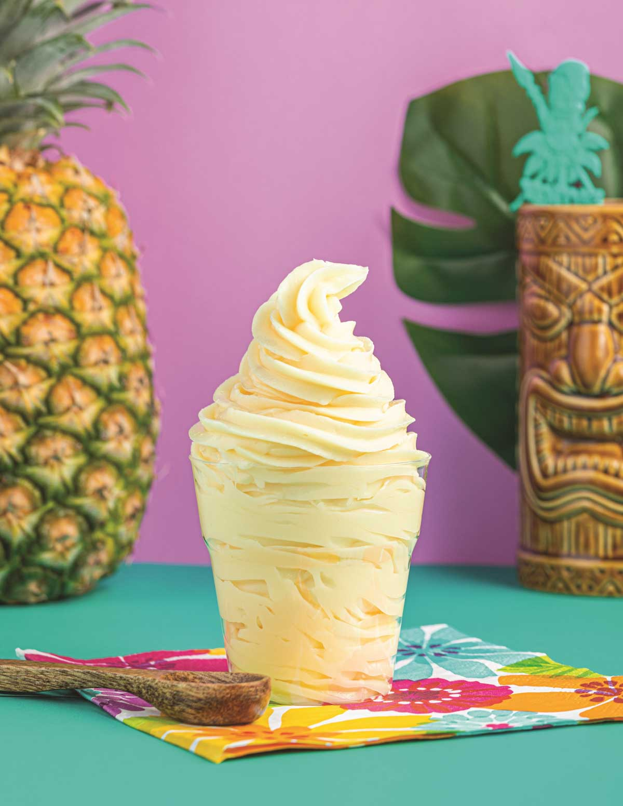

Grown-Up Dole Whip

I love the Dole® Whip at Disneyland®, and decided to try and make an adult version with coconut vodka--it's delicious!
Ingredients
- 2 cups diced frozen pineapple
- 2 (1.5 fluid ounce) jiggers coconut-flavored vodka
- 1 tablespoon chilled low-fat coconut milk, or as needed
Steps
- Combine pineapple and vodka in a blender. Blend on medium speed; add coconut milk and blend until smooth and the consistency of frozen yogurt, adding more coconut milk if needed to thin mixture.